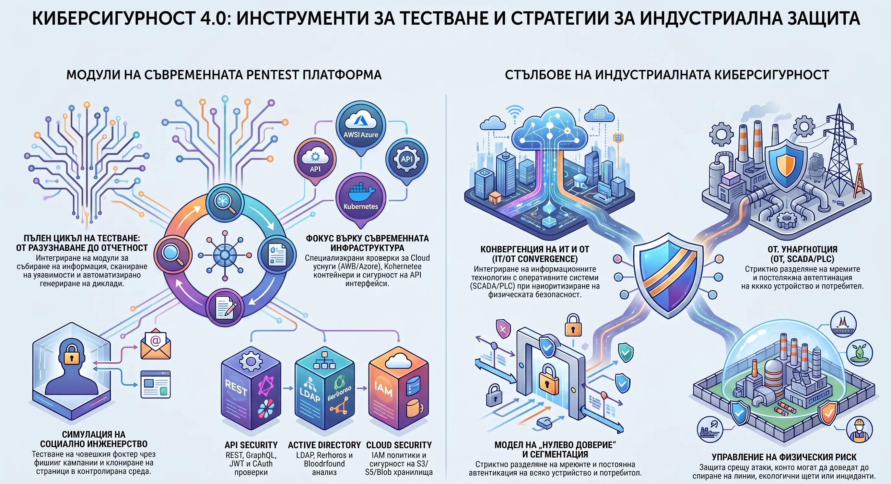

Offensive Security
Penetration Testing
Открийте слабите места контролирано, преди да бъдат използвани от нападатели. Тестваме реалистично, отговорно и с фокус върху поправими резултати.

Практическа проверка
Реалистичен тест, ясен план за действие
Преди започване уточняваме целите, ограниченията и критичните системи. След това комбинираме автоматизирани инструменти и ръчен анализ, за да избегнем шумни резултати и да покажем реалния риск.
- Web и API тестовеПроверка на автентикация, авторизация, бизнес логика и OWASP рискове.
- Network penetration testingОценка на външен периметър, вътрешна мрежа и сегментация.
- Cloud и конфигурацииТърсене на експонирани ресурси, грешни права и рискови настройки.
- Retest и remediationПовторна проверка дали критичните уязвимости са отстранени.
За бизнес и регулации
Доказуема сигурност за клиенти и одитори
Докладите могат да подпомогнат изисквания по ISO 27001, PCI DSS, NIS2 и DORA. Превеждаме техническите находки на езика на риска, така че ръководството да знае какво да поправи първо.
Често задавани въпроси
Penetration Testing
Какви системи могат да бъдат тествани?
Тестваме web приложения, API, външна и вътрешна мрежа, облачни среди, мобилни приложения и избрани социално-инженерни сценарии.
Какво получаваме след теста?
Получавате технически доклад с доказателства, риск оценка, CVSS приоритизация и конкретни препоръки за отстраняване и повторна проверка.